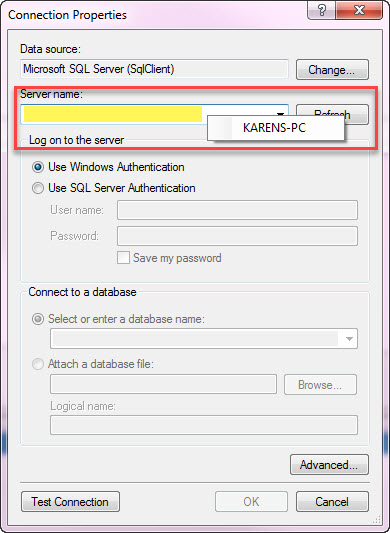
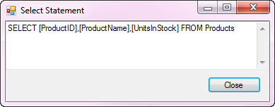

Using Microsoft Visual Studio Connection Dialog at tuntime
Description
In Visual Studio when a developer wants to create strong typed classes for database tables either for the conventional TableAdapter or Entity Framework there is a place in the process where a dialog is displayed as shown below. I will show you how to do this at runtime and a bit more.

This code sample will show you the basics of using this dialog by working with the source code. In the next screenshot I have modified the source code so that any time SQL-Server data provider is used and it's my login I get a context menu item that allows me to auto fill the Server Name.

That is cool but we will now take advantage of this dialog so that (in this code sample) can create a SQL SELECT statement or create a CSV file for a table.
To demonstrate this I created a simple windows forms project with the following interface to select a server, select a table, select columns. After making these selections pressing "Generate SQL SELECT" you get the following in the second image below.

From Generate SQL SELECT (this logic can start you on other ideas with this simple example)

Pressing "Export CSV" takes the SQL SELECT statement and passes it off to a process which uses SQLCMD.EXE. My Exporter class takes information obtained from the Connection Dialog and selections done in the form to create a CSV file.
using System; using System.Diagnostics; using System.Linq; namespace WindowsFormsApplication1_cs { public class Exporter { public void ToCsv(string ServerName, string DatabaseName, string SelectStatement, string FileName) { string DoubleQuote = ((char)(34)).ToString(); string QueryToExceute = DoubleQuote + SelectStatement + DoubleQuote; string ExportFileName = DoubleQuote + FileName + DoubleQuote; var Process = new Process(); Process.StartInfo.UseShellExecute = false; Process.StartInfo.RedirectStandardOutput = true; Process.StartInfo.RedirectStandardError = true; Process.StartInfo.CreateNoWindow = true; Process.StartInfo.FileName = "SQLCMD.EXE"; Process.StartInfo.Arguments = "-S " + ServerName + " -d " + DatabaseName + " -E -Q " + QueryToExceute + " -o " + ExportFileName + " -h-1 -s\",\" -w 700"; Console.WriteLine($"SQLCMD.EXE {Process.StartInfo.Arguments}"); Process.Start(); Process.WaitForExit(); if (System.IO.File.Exists(FileName)) { var contents = System.IO.File.ReadAllLines(FileName) .Where(line => !line.ToLower().Contains("rows affected") && !string.IsNullOrWhiteSpace(line)).ToArray(); System.IO.File.WriteAllLines(FileName, contents); } } } }
using System; using System.Diagnostics; using System.Linq; namespace WindowsFormsApplication1_cs { public class Exporter { public void ToCsv(string ServerName, string DatabaseName, string SelectStatement, string FileName) { string DoubleQuote = ((char)(34)).ToString(); string QueryToExceute = DoubleQuote + SelectStatement + DoubleQuote; string ExportFileName = DoubleQuote + FileName + DoubleQuote; var Process = new Process(); Process.StartInfo.UseShellExecute = false; Process.StartInfo.RedirectStandardOutput = true; Process.StartInfo.RedirectStandardError = true; Process.StartInfo.CreateNoWindow = true; Process.StartInfo.FileName = "SQLCMD.EXE"; Process.StartInfo.Arguments = "-S " + ServerName + " -d " + DatabaseName + " -E -Q " + QueryToExceute + " -o " + ExportFileName + " -h-1 -s\",\" -w 700"; Console.WriteLine($"SQLCMD.EXE {Process.StartInfo.Arguments}"); Process.Start(); Process.WaitForExit(); if (System.IO.File.Exists(FileName)) { var contents = System.IO.File.ReadAllLines(FileName) .Where(line => !line.ToLower().Contains("rows affected") && !string.IsNullOrWhiteSpace(line)).ToArray(); System.IO.File.WriteAllLines(FileName, contents); } } } }
How to use in your project

IMPORTANT